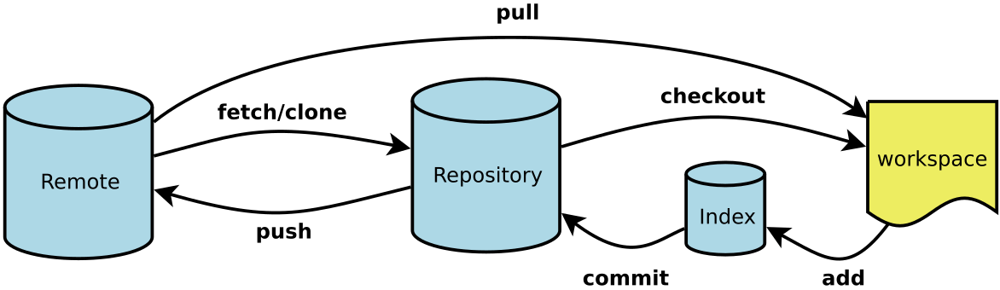

概念model
|
 |
clone
支持多种协议，git最快。
[Index] |
remote
|
[Index] |
fetch
取回远程主机的更新以后，可以在它的基础上，使用git checkout命令创建一个新的分支。
此外，也可以使用git merge命令或者git rebase命令，在本地分支上合并远程分支。 before
merged
rebase
[Index] |


pull
git fetch origin git merge origin/next
自动追踪关系在某些场合，Git会自动在本地分支与远程分支之间，建立一种追踪关系（tracking）。比如，在git clone的时候，所有本地分支默认与远程主机的同名分支，建立追踪关系，也就是说，本地的master分支自动"追踪"origin/master分支。 Git也允许手动建立追踪关系。
如果当前分支与远程分支存在追踪关系，git pull就可以省略远程分支名。
上面命令表示，本地的当前分支自动与对应的origin主机"追踪分支"（remote-tracking branch）进行合并。
如果当前分支只有一个追踪分支，连远程主机名都可以省略。
上面命令表示，当前分支自动与唯一一个追踪分支进行合并。
如果合并需要采用rebase模式，可以使用--rebase选项。
如果远程主机删除了某个分支，默认情况下，git pull 不会在拉取远程分支的时候，删除对应的本地分支。这是为了防止，由于其他人操作了远程主机，导致git pull不知不觉删除了本地分支。
但是，你可以改变这个行为，加上参数 -p 就会在本地删除远程已经删除的分支。 git pull -p #等同于下面的命令 git fetch --prune origin git fetch -p
|
push
如果省略本地分支名，则表示删除指定的远程分支，因为这等同于推送一个空的本地分支到远程分支。 $ git push origin :master # 等同于 $ git push origin --delete master 如果当前分支与远程分支之间存在追踪关系，则本地分支和远程分支都可以省略。
上面命令表示，将当前分支推送到origin主机的对应分支。 如果当前分支只有一个追踪分支，那么主机名都可以省略。
如果当前分支与多个主机存在追踪关系，则可以使用-u选项指定一个默认主机，这样后面就可以不加任何参数使用git
上面命令将本地的master分支推送到origin主机，同时指定origin为默认主机，后面就可以不加任何参数使用git push了。
不带任何参数的git push，默认只推送当前分支，这叫做simple方式。此外，还有一种matching方式，会推送所有有对应的远程分支的本地分支。Git 2.0版本之前，默认采用matching方法，现在改为默认采用simple方式。如果要修改这个设置，可以采用git config命令。
$ git config --global push.default matching
# 或者
$ git config --global push.default simple
还有一种情况，就是不管是否存在对应的远程分支，将本地的所有分支都推送到远程主机，这时需要使用--all选项。
上面命令表示，将所有本地分支都推送到origin主机。
如果远程主机的版本比本地版本更新，推送时Git会报错，要求先在本地做git pull合并差异，然后再推送到远程主机。这时，如果你一定要推送，可以使用--force选项。
上面命令使用--force选项，结果导致远程主机上更新的版本被覆盖。除非你很确定要这样做，否则应该尽量避免使用--force选项。 最后，git push不会推送标签（tag），除非使用--tags选项。
[Index] |